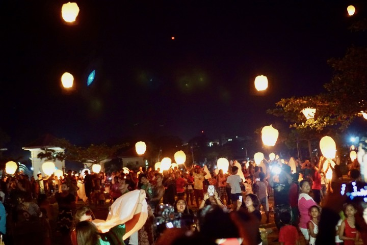

Vigan has a lot of things to offer. Bigueños make sure to preserve their culture, history, and unique architecture for you to visit. In 1999, UNESCO declared Vigan as a World Heritage site. You will be amazed by its grid street pattern and picturesque house layouts. You can visit Burgos National Museum and Palacio de Arzobispado to know their treasured history. You can also learn pottery from Pagburnayan Jar Factory and meet GAMABA artist Fidel Go. You can enjoy your life there but you should never miss the Vigan cuisine especially pakbet, empanada, longannisa, and kankanen. Vigan is an agricultural town that’s why you can eat fresh and delicious foods that are prepared by the lovely farmers and cooks. Visiting this place would be your best travel among the rest of the world. Its culture, history, and tradition will make you feel safe and happy. This could be a chance for yourself to recharge and live a peaceful life. So how about we visit Vigan?